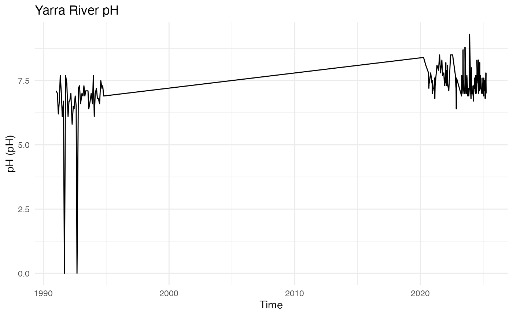

Introduction to yarraWQ
yarraWQ-intro.RmdOverview
The yarraWQ package provides cleaned water quality data
collected from the Yarra River monitoring program in Victoria,
Australia. It also includes helper functions and an interactive Shiny
app to explore changes in key water quality parameters such as pH,
temperature, turbidity, and dissolved oxygen over time.
Loading the package
library(yarraWQ)Exploring the data
head(yarra_wq)
#> site_id name datetime data_type parameter_id
#> 1 229143 YARRA @ CHANDLER HWY 1991-01-08 13:50:00 Quality 210
#> 2 229143 YARRA @ CHANDLER HWY 1991-02-12 09:35:00 Quality 210
#> 3 229143 YARRA @ CHANDLER HWY 1991-03-12 14:00:00 Quality 210
#> 4 229143 YARRA @ CHANDLER HWY 1991-04-09 11:00:00 Quality 210
#> 5 229143 YARRA @ CHANDLER HWY 1991-05-07 11:10:00 Quality 210
#> 6 229143 YARRA @ CHANDLER HWY 1991-06-11 10:25:00 Quality 210
#> parameter value unit_of_measurement quality resolution date
#> 1 pH 7.1 pH 65 Raw Data 1991-01-08 13:50:00
#> 2 pH 7.0 pH 65 Raw Data 1991-02-12 09:35:00
#> 3 pH 6.2 pH 65 Raw Data 1991-03-12 14:00:00
#> 4 pH 6.7 pH 65 Raw Data 1991-04-09 11:00:00
#> 5 pH 7.7 pH 65 Raw Data 1991-05-07 11:10:00
#> 6 pH 6.9 pH 65 Raw Data 1991-06-11 10:25:00
#> year month weekday hour period
#> 1 1991 Jan Tue 13 1990s
#> 2 1991 Feb Tue 9 1990s
#> 3 1991 Mar Tue 14 1990s
#> 4 1991 Apr Tue 11 1990s
#> 5 1991 May Tue 11 1990s
#> 6 1991 Jun Tue 10 1990sThe dataset yarra_wq contains 876 rows and 16 variables,
including:
site_id: Monitoring site ID
name: Site name
date, year, month: Observation date
parameter: Parameter measured (e.g., pH, temperature)
value: Recorded measurement
unit_of_measurement: Measurement unit (e.g., mg/L, NTU, °C)
Visualising a parameter
The function plot_yarra_metric() creates a simple time
series plot for one chosen parameter (e.g., “pH”).
plot_yarra_metric(parameter_name = "pH")
You can also filter by specific monitoring sites:
unique(yarra_wq$name)[1:3]
#> [1] "YARRA @ CHANDLER HWY" NA NAInteractive exploration with Shiny
For a more flexible exploration, you can launch the interactive app included in the package. This app is not run while building the vignette.
The Shiny app allows users to:
Select a parameter and site
View corresponding trends interactively
Compare results across multiple sites